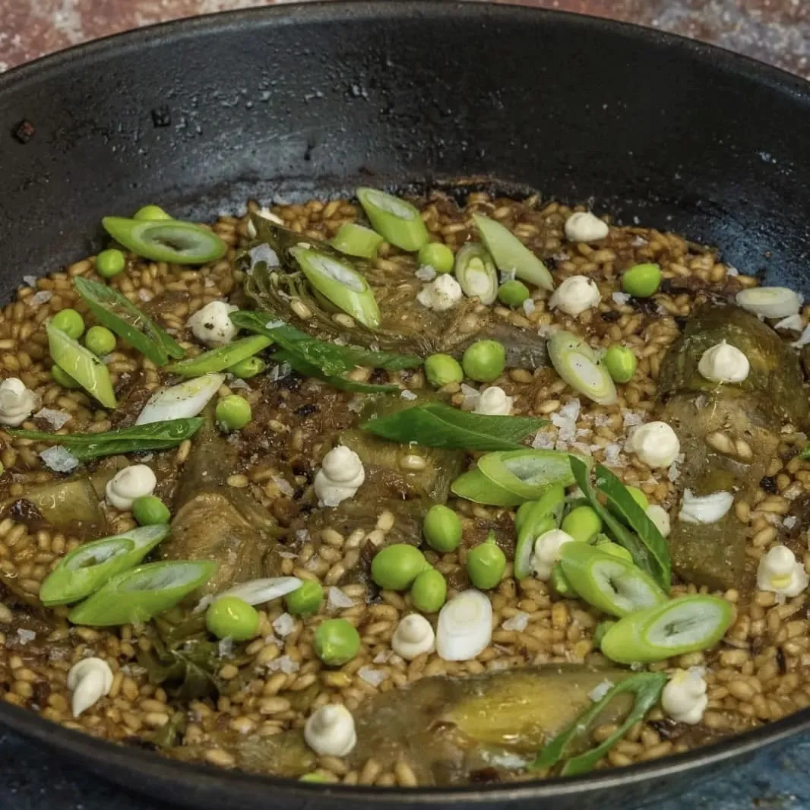

⏲ 35 minuts 👥 2 racions

Comencem el mes amb un bon arròs, però aquesta vegada una mica diferent. Els acostumem a fer de peix
i especialment de carn, el que ens ajuda a donar-li molta potència de sabor. Amb aquesta recepta
aconseguireu la mateixa força en el gust, però fent un arròs verd, una versió totalment
vegetal!
Ingredients:
- 100g d'arròs
- 3 carxofes
- 1/2 ceba de Figueres
- 1/2 ceba tendra japonesa
- Un bon grapat de pèsols amb beina
- La part verda d'un porro
- Llorer
- Lactonesa d'all o allioli
- Escates de sal
- Oli, sal marina i pebre
- Pelem les carxofes i emprem les pells per fer un brou vegetal, amb les beines dels pèsols i la part verda d’un porro. Afegim sal, pebre en gra i llorer, i cobrim amb aigua. Bullim 45 minuts.
- Paral·lelament i abans que s’oxidin, coem uns 10 minuts els cors de carxofa tallats a quarts.
- En una paella afegim mitja ceba picada fina i la deixem torrar. Seguidament, afegim oli i els cors de carxofa precuits.
- Enrossim lleugerament l’arròs i aboquem el caldo de verdures ben calent. Per fer un arròs sec, afegirem 2,5/3 parts de caldo per cada part d’arròs, per tant, farem amb menys de mig litre. Coem l’arròs durant uns 10/12 minuts a foc alegre, després cobrim amb un drap i ho deixem reposar 5 minuts.
- Acabem l’arròs escampant un grapat de pèsols, ceba japonesa tallada a juliana, unes puntes de lactonesa d’all o allioli, i escates de sal.